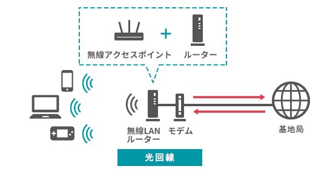

|
今月も通信制限
もうスマホは使えない…
悩み１ スマホを充分に楽しめない
ちょっとした空き時間でインスタやツイッターを楽しみたい。
最近面白い人をフォローしたので、ずっとスマホを見ていたら…「もう通信制限…！？」
悩み２ パケットの追加は異常に高い
動画はもちろん、普通のサイトの閲覧でさえ、すごく読み込みが遅くなった。
パケットを買うと改善されるけど、5GBで5,000円もかかるらしい…。「制限を気にせずにスマホを使う方法ってないの…？」
そのお悩み、解決できます！
おウチで無制限のWi-Fiを利用しよう！

解決方法 無制限でWi-Fiを利用する
最近のSNSでは、知らない間に高画質の画像や動画をたくさんダウンロードしてしまいます。
どこにいる時でも携帯会社のパケットを使っていたら、あっという間に通信制限になってしまいます。
そこで、家の中にWi-Fi環境を作ることで、無制限のインターネットを楽しむことができます。 もちろん、YoutubeやNETFLIXなどの高画質動画も、おウチの中で見放題です。 快適なスマホライフを目指して、ぜひインターネット環境を整えてみましょう。 |
|